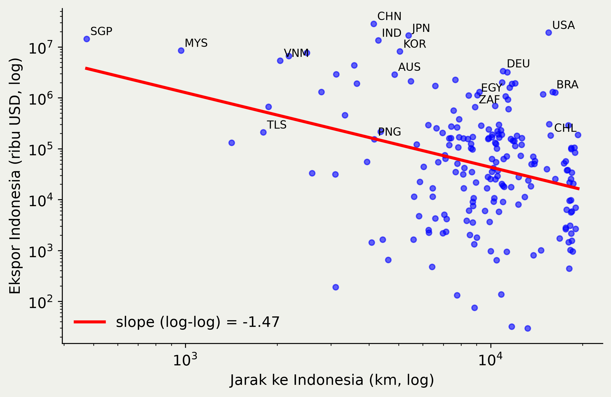
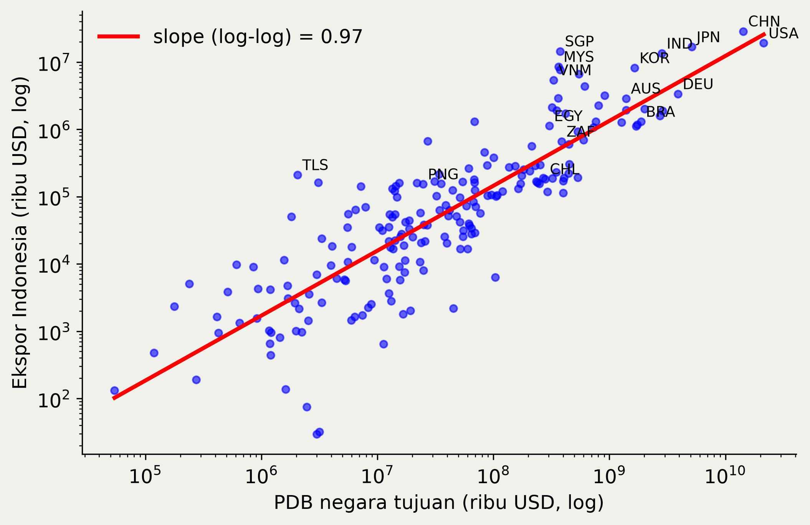
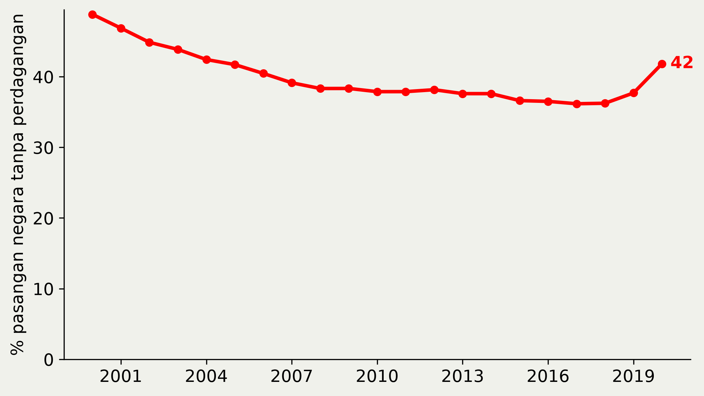
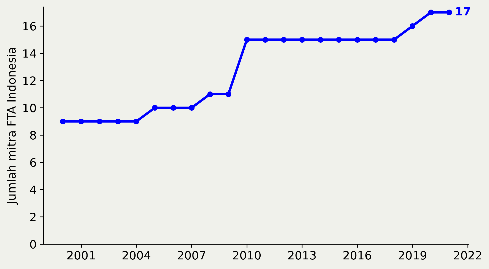

Model Gravity dan PPML
Pertemuan 1: Teori, Perkembangan, dan Kasus Indonesia
![]()
1 Oktober 2026
Outline
- Motivasi: gravity dalam data Indonesia
- Naive gravity dan structural gravity
- Empat masalah estimasi dan PPML
- Interpretasi koefisien
- Kasus Indonesia
- Persiapan lab
Bahan utama: WTO/UNCTAD A Practical Guide to Trade Policy Analysis (2012), Bab 3; Yotov, Piermartini, Monteiro & Larch, An Advanced Guide to Trade Policy Analysis: The Structural Gravity Model (2016), Bab 1–2; WTO/UNCTAD A Practical Guide to Non-Tariff Measures (2012), Bab 3.
Motivasi
Ekspor dan jarak
Scatterplot jarak bilateral (sumbu-x, km) terhadap ekspor Indonesia per negara tujuan (sumbu-y, ribu USD), 2019, skala log. Garis merah: fitted line OLS log-log. Sumber: CEPII Gravity V202211 (BACI).

Ekspor dan jarak
- Hubungan negatif yang jelas: elastisitas sekitar −1,5.
- Dispersinya besar: AS dan Tiongkok jauh di atas garis.
- Timor-Leste dekat, tetapi di bawah garis.
→ Ukuran ekonomi tujuan belum dikontrol.
Ekspor dan PDB tujuan
Scatterplot PDB negara tujuan (sumbu-x, ribu USD) terhadap ekspor Indonesia per negara tujuan (sumbu-y, ribu USD), 2019, skala log. Sumber: CEPII Gravity V202211 (BACI, WDI).

Ekspor dan PDB tujuan
- Elastisitas terhadap PDB tujuan ≈ 1.
- Ukuran menarik perdagangan, jarak menahannya.
- Analogi Newton: \(F = G\,\dfrac{M_1 M_2}{D^2}\)
Structural gravity
Naive gravity
\[ \ln X_{ij} = \beta_0 + \beta_1 \ln Y_i + \beta_2 \ln Y_j + \beta_3 \ln DIST_{ij} + \varepsilon_{ij} \]
di mana \(X_{ij}\) adalah ekspor bilateral eksportir \(i\) dengan tujuan \(j\), \(Y_i\) dan \(Y_j\) adalah PDB eksportir dan importir, \(DIST_{ij}\) adalah jarak bilateral, dan \(\varepsilon_{ij}\) adalah error term (Tinbergen, 1962).
- Fit empirisnya baik, tetapi tanpa fondasi teori.
- Perdagangan \(i\)–\(j\) juga bergantung pada semua negara lain.
Intuisi: resistensi multilateral
- Australia–NZ dan Indonesia–Malaysia berjarak mirip.
- Australia & NZ terisolasi: mitra alternatifnya sedikit dan jauh, sehingga keduanya banyak berdagang satu sama lain.
- Indonesia & Malaysia dikelilingi banyak mitra dekat.
→ Yang penting adalah biaya relatif: biaya \(i\)–\(j\) dibanding biaya dengan semua mitra lain.
Structural gravity
\[ X_{ij} = \frac{Y_i E_j}{Y}\left(\frac{t_{ij}}{\Pi_i P_j}\right)^{1-\sigma} \]
di mana \(Y_i\) adalah output eksportir \(i\), \(E_j\) adalah total belanja importir \(j\), \(Y\) adalah output dunia, \(t_{ij} \geq 1\) adalah faktor biaya dagang bilateral, dan \(\sigma > 1\) adalah elastisitas substitusi antar negara asal (Anderson & van Wincoop, 2003).
Multilateral resistance
\[ \Pi_i^{1-\sigma} = \sum_j \left(\frac{t_{ij}}{P_j}\right)^{1-\sigma}\frac{E_j}{Y} \]
\[ P_j^{1-\sigma} = \sum_i \left(\frac{t_{ij}}{\Pi_i}\right)^{1-\sigma}\frac{Y_i}{Y} \]
- \(\Pi_i\): outward MR, seberapa sulit \(i\) menjual di pasar dunia.
- \(P_j\): inward MR, seberapa sulit dunia menjual di pasar \(j\) (≈ indeks harga).
Biaya dagang
\[ \begin{aligned} t_{ij}^{1-\sigma} = \exp\big(&\beta_1 \ln DIST_{ij} + \beta_2 CNTG_{ij} + \beta_3 LANG_{ij} \\ &+ \beta_4 CLNY_{ij} + \beta_5 RTA_{ij}\big) \end{aligned} \]
di mana \(CNTG_{ij}\), \(LANG_{ij}\), \(CLNY_{ij}\), dan \(RTA_{ij}\) bernilai 1 jika \(i\) dan \(j\) berbatasan darat, berbahasa resmi sama, pernah berhubungan kolonial, dan terikat perjanjian dagang.
Biaya dagang
- \(t_{ij}\) tidak teramati, sehingga diproksi.
- Kebijakan (tarif, RTA, NTM) masuk lewat \(t_{ij}\).
- Koefisien = efek terhadap \(t_{ij}\) dikali \(1-\sigma\).
Perkembangan literatur (1)
| Tahun | Kontribusi |
|---|---|
| 1962 | Tinbergen: regularitas empiris |
| 1979 | Anderson: fondasi teori (Armington) |
| 2002 | Eaton & Kortum: gravity dalam model Ricardian |
| 2003 | Anderson & van Wincoop: multilateral resistance |
| 2006 | Santos Silva & Tenreyro: PPML |
| 2007 | Baier & Bergstrand: pair fixed effects |
Perkembangan literatur (2)
| Tahun | Kontribusi |
|---|---|
| 2008 | Helpman, Melitz & Rubinstein: zero flows |
| 2012 | Arkolakis, Costinot & Rodríguez-Clare: welfare |
| 2014 | Head & Mayer: toolkit and cookbook |
| 2015 | Fally: PPML + FE = structural gravity |
| 2016 | Yotov et al.: Advanced Guide, GE PPML |
| 2020 | Correia, Guimarães & Zylkin: ppmlhdfe |
Banyak model mikro menghasilkan persamaan gravity yang sama.
Empat masalah
1: Multilateral resistance
- \(\Pi_i\) dan \(P_j\) tidak teramati.
- Jika diabaikan: omitted variable bias.
- Solusi: FE eksportir-tahun dan importir-tahun.
1: Multilateral resistance
\[ X_{ijt} = \exp\left(\pi_{it} + \chi_{jt} + \beta' \mathbf{z}_{ijt}\right)\varepsilon_{ijt} \]
di mana \(\pi_{it}\) menyerap \(\ln Y_{it} - (1-\sigma)\ln \Pi_{it}\), \(\chi_{jt}\) menyerap \(\ln E_{jt} - (1-\sigma)\ln P_{jt}\), \(\mathbf{z}_{ijt}\) adalah vektor variabel biaya dagang bilateral, dan \(\varepsilon_{ijt}\) adalah error term.
Mengapa FE menyerap MR?
Log structural gravity untuk tahun \(t\):
\[ \begin{aligned} \ln X_{ijt} = \; & \underbrace{\ln Y_{it} - (1-\sigma)\ln \Pi_{it}}_{\pi_{it}} \\ & + \underbrace{\ln E_{jt} - (1-\sigma)\ln P_{jt}}_{\chi_{jt}} \\ & - \ln Y_t + (1-\sigma)\ln t_{ijt} \end{aligned} \]
Membaca derivasi
- Semua suku yang hanya bergantung pada \(i,t\) digabung menjadi satu dummy \(\pi_{it}\); yang hanya bergantung pada \(j,t\) menjadi \(\chi_{jt}\).
- \(\ln Y_t\) (output dunia) ikut terserap oleh FE.
- Yang tersisa untuk diestimasi hanya biaya bilateral \((1-\sigma)\ln t_{ijt}\).
Mengapa bias jika diabaikan?
- \(\Pi_i\) dan \(P_j\) adalah fungsi dari semua \(t_{ij}\), termasuk jarak.
- Negara yang terpencil (Australia, NZ) punya \(\Pi_i\) dan \(P_j\) tinggi: biaya relatif dengan mitra terdekat menjadi lebih rendah.
- Jika MR dihilangkan, ia masuk ke error dan berkorelasi dengan \(\ln DIST_{ij}\) → koefisien jarak bias.
- Contoh klasik: border puzzle McCallum (1995). Efek perbatasan Kanada–AS jauh lebih kecil setelah MR dikontrol (Anderson & van Wincoop, 2003).
Mengapa FE harus per tahun?
- MR berubah setiap kali ada \(t_{ij}\) yang berubah, di mana pun di dunia.
- Contoh: ACFTA menurunkan biaya Tiongkok–ASEAN. Bagi Jepang, pasar Indonesia menjadi relatif lebih sulit ditembus → \(P_{IDN}\) berubah.
- Inilah trade diversion: perjanjian pihak lain memengaruhi perdagangan Indonesia–Jepang.
- FE tanpa dimensi waktu (\(\pi_i\), \(\chi_j\)) tidak menangkap perubahan ini dalam data panel.
Alternatif selain FE
| Pendekatan | Catatan |
|---|---|
| Remoteness index \(REM_i = \sum_j DIST_{ij} / (Y_j / Y)\) | Mudah, tetapi tidak konsisten dengan teori |
| Nonlinear least squares (Anderson & van Wincoop, 2003) | Konsisten, tetapi rumit dan butuh semua \(t_{ij}\) |
| FE eksportir-tahun & importir-tahun | Sederhana dan konsisten; dengan PPML, FE = MR (Fally, 2015) |
Harga FE: variabel yang hanya bervariasi di \(i,t\) atau \(j,t\) (PDB, populasi) tidak bisa diestimasi.
2: Zero flows
Persentase pasangan negara (sumbu-y) yang tidak berdagang per tahun (sumbu-x), di antara negara yang tercatat di BACI. BACI tidak mencatat nol, sehingga aliran yang hilang dianggap nol. Sumber: CEPII Gravity V202211.

2: Zero flows
- 35–45% pasangan negara tidak berdagang.
- \(\ln 0\) tidak terdefinisi, sehingga OLS log membuangnya.
- Akibatnya: selection bias.
- Lonjakan 2020: COVID dan/atau data yang belum lengkap.
3: Heteroskedastisitas
\[ X_{ij} = \exp(\mathbf{x}_{ij}'\beta)\,\eta_{ij}, \qquad E[\eta_{ij} \mid \mathbf{x}_{ij}] = 1 \]
\[ \ln X_{ij} = \mathbf{x}_{ij}'\beta + \ln \eta_{ij} \]
di mana \(\mathbf{x}_{ij}\) adalah vektor regressor dan \(\eta_{ij}\) adalah error multiplikatif.
Arti \(E[\eta_{ij} \mid \mathbf{x}_{ij}] = 1\)
- Versi multiplikatif dari asumsi \(E[\varepsilon \mid \mathbf{x}] = 0\): karena error dikalikan, nilai netralnya 1, bukan 0.
- Rata-rata error sama dengan 1 untuk setiap nilai regressor, sehingga
\[ E[X_{ij} \mid \mathbf{x}_{ij}] = \exp(\mathbf{x}_{ij}'\beta)\cdot E[\eta_{ij} \mid \mathbf{x}_{ij}] = \exp(\mathbf{x}_{ij}'\beta) \]
- Artinya \(\exp(\mathbf{x}_{ij}'\beta)\) adalah conditional mean perdagangan. Ini syarat identifikasi (eksogenitas) sekaligus normalisasi.
Masalahnya setelah di-log
OLS log butuh \(E[\ln \eta_{ij} \mid \mathbf{x}_{ij}]\) konstan. Tetapi (aproksimasi orde kedua; eksak jika \(\eta\) lognormal):
\[ E[\ln \eta_{ij} \mid \mathbf{x}_{ij}] \approx -\tfrac{1}{2}\,\mathrm{Var}(\eta_{ij} \mid \mathbf{x}_{ij}) \]
- Heteroskedastis: varians bergantung pada \(\mathbf{x}_{ij}\) (mis. pasangan jauh/kecil lebih bervariasi).
- Maka \(E[\ln \eta_{ij} \mid \mathbf{x}_{ij}]\) ikut berubah, masuk ke error, dan berkorelasi dengan regressor.
- OLS log tidak konsisten: koefisiennya bias, bukan hanya SE.
- PPML hanya butuh \(E[\eta_{ij} \mid \mathbf{x}_{ij}] = 1\) (Santos Silva & Tenreyro, 2006).
Solusi: PPML
Estimasi dalam level:
\[ X_{ij} = \exp(\mathbf{x}_{ij}'\beta) + e_{ij} \]
First-order condition:
\[ \sum_{i,j} \left[X_{ij} - \exp(\mathbf{x}_{ij}'\hat\beta)\right]\mathbf{x}_{ij} = 0 \]
Sifat PPML
- Konsisten jika \(E[X_{ij} \mid \mathbf{x}_{ij}] = \exp(\mathbf{x}_{ij}'\beta)\).
- \(X_{ij}\) tidak harus Poisson atau bilangan bulat.
- Zero flows ikut diestimasi.
- Fally (2015): dengan FE eksportir & importir, \(\sum_j \hat X_{ij} = Y_i\) dan \(\sum_i \hat X_{ij} = E_j\), sehingga FE = MR.
4: Endogenitas kebijakan
- FTA dibuat dengan mitra yang sudah banyak berdagang.
- Akibatnya \(RTA_{ij}\) berkorelasi dengan error.
- Solusi: panel + pair FE (Baier & Bergstrand, 2007).
4: Endogenitas kebijakan
\[ X_{ijt} = \exp\left(\pi_{it} + \chi_{jt} + \mu_{ij} + \beta\,RTA_{ijt}\right)\varepsilon_{ijt} \]
di mana \(\mu_{ij}\) adalah pair FE yang menyerap semua biaya bilateral yang tetap (jarak, bahasa, kolonial), dan \(RTA_{ijt}\) = 1 jika perjanjian berlaku pada tahun \(t\).
- \(\beta\) diidentifikasi dari variasi within-pair: sebelum vs sesudah FTA.
Rekomendasi praktis
- Data panel, interval 3–5 tahun.
- PPML dalam level, termasuk zero flows.
- FE eksportir-tahun dan importir-tahun.
- Pair FE untuk kebijakan bilateral.
- Sertakan aliran domestik \(X_{ii}\) jika ada.
- Cluster SE per pasangan negara.
Sumber: Yotov et al. (2016), Bab 1.
Interpretasi
Membaca koefisien
- Variabel log (jarak, PDB): \(\beta\) = elastisitas.
- \(\beta_{DIST} = -0{,}9\): jarak +1%, perdagangan −0,9%.
- Variabel dummy (RTA, bahasa): efeknya
\[ \left(e^{\beta} - 1\right) \times 100\% \]
Dummy: jangan \(\beta \times 100\)
| \(\hat\beta\) | \(\hat\beta \times 100\) | \((e^{\hat\beta}-1)\times 100\) |
|---|---|---|
| 0,10 | 10% | 10,5% |
| 0,50 | 50% | 64,9% |
| 1,00 | 100% | 171,8% |
Aproksimasi hanya berlaku untuk \(\beta\) kecil.
Tarif dalam gravity
\[ X_{ij} = \exp\left(\dots + \beta_\tau \ln(1+\tau_{ij})\right) \]
di mana \(\tau_{ij}\) adalah tarif ad valorem yang dikenakan \(j\) atas impor asal \(i\).
- \(\beta_\tau = 1 - \sigma = -\theta\): trade elasticity.
- Literatur: umumnya −4 sampai −8 (Head & Mayer, 2014).
- Dipakai untuk simulasi GE (Advanced Guide, Bab 2).
Apa yang diserap FE?
| FE | Menyerap |
|---|---|
| \(\pi_{it}\) | PDB \(i\), kebijakan \(i\) terhadap semua mitra |
| \(\chi_{jt}\) | PDB \(j\), tarif MFN \(j\), kebijakan \(j\) terhadap semua mitra |
| \(\mu_{ij}\) | Jarak, bahasa, kolonial, perbatasan |
Yang tersisa: variabel yang bervariasi di pasangan × waktu (\(RTA_{ijt}\), tarif preferensial, sanksi).
Jebakan: kebijakan unilateral
- Larangan ekspor nikel, perizinan impor, TKDN: berlaku untuk semua mitra.
- Akibatnya kolinear dengan \(\pi_{it}\) atau \(\chi_{jt}\).
- Koefisien di-drop atau tidak teridentifikasi.
Solusi: aliran domestik
\[ \begin{aligned} X_{ijt} = \exp\big(&\pi_{it} + \chi_{jt} + \mu_{ij} \\ &+ \beta\,INTL_{ij} \times POLICY_{jt}\big)\,\varepsilon_{ijt} \end{aligned} \]
di mana sampel mencakup aliran domestik \(X_{iit}\), \(INTL_{ij} = 1\) jika \(i \neq j\), dan \(POLICY_{jt}\) adalah kebijakan negara \(j\) pada tahun \(t\) (Heid, Larch & Yotov, 2021).
- Latihan: Advanced Guide Bab 1, Exercise 2.
Kasus Indonesia
Mitra FTA Indonesia
Jumlah negara mitra (sumbu-y) yang memiliki perjanjian dagang berlaku dengan Indonesia per tahun (sumbu-x), berdasarkan notifikasi WTO. Sumber: CEPII Gravity V202211 (fta_wto), data sampai 2021.

Mitra FTA Indonesia
- 2000: ASEAN (9); 2005: Tiongkok; 2008: Jepang; 2010: Australia, NZ, India, Korea; 2019: Hong Kong; 2020: Chile.
- RCEP (2023) dan IEU-CEPA belum tercakup.
- Satu mitra bisa dicakup beberapa perjanjian (Australia: AANZFTA, IA-CEPA).
fta_wtotidak membedakan kedalaman perjanjian.
Studi kasus: Sedrakyan (2023)
- Pertanyaan: apakah RTA Indonesia menaikkan ekspor dan impor?
- Data: perdagangan Indonesia dengan 42 mitra, 1989–2019, agregat dan 9 kelompok produk.
- Metode: PPML; RTA dibedakan menjadi AFTA, ASEAN-Plus, partial scope agreement, dan keanggotaan WTO.
- Temuan: AFTA tidak menaikkan ekspor Indonesia, tetapi menaikkan impor. Format ASEAN-Plus berasosiasi negatif dengan ekspor.
Sedrakyan, G. S. (2023). The impact of preferential trade agreements on trade in Indonesia. USITC Economics Working Paper 2023-12-A.
Sampel hanya Indonesia
- Semua pasangan melibatkan Indonesia → FE eksportir/importir untuk Indonesia = konstanta, ikut ter-drop.
- Sedrakyan memakai remoteness index sebagai pengganti MR (lihat slide “Alternatif selain FE”).
- Alternatif yang konsisten dengan teori: pakai sampel dunia (semua pasangan negara), FE \(\pi_{it}, \chi_{jt}, \mu_{ij}\), lalu
\[ \beta_1 RTA_{ijt} + \beta_2 \left(RTA_{ijt} \times IDN_{ij}\right) \]
di mana \(IDN_{ij} = 1\) jika Indonesia adalah eksportir atau importir. Ini yang kita lakukan di lab.
Pertanyaan dan spesifikasi (1)
| Pertanyaan | Spesifikasi |
|---|---|
| Efek ACFTA / IJEPA / IA-CEPA? | Panel PPML, FE \(\pi_{it}, \chi_{jt}, \mu_{ij}\), \(RTA_{ijt}\) |
| Efek FTA khusus Indonesia? | \(RTA_{ijt} \times IDN_{ij}\) |
| Efek tarif AS / Indonesia–US ART? | \(\ln(1+\tau_{ijt})\) |
Pertanyaan dan spesifikasi (2)
| Pertanyaan | Spesifikasi |
|---|---|
| Larangan ekspor nikel, perizinan impor? | \(X_{ii}\) + \(INTL_{ij} \times POLICY_{jt}\) |
| Ad valorem equivalent NTM? | Gravity tingkat produk (NTM Guide, Bab 3) |
| Efek terhadap welfare / PDB riil? | GE PPML (Advanced Guide, Bab 2) |
Ex post vs ex ante
- Ex post (lab): FTA sudah berlaku; estimasi \(\beta_{RTA}\).
- Ex ante (mis. IEU-CEPA): simulasi
- Estimasi koefisien biaya dagang (PPML).
- Ubah \(t_{ij}\) sesuai skenario.
- Hitung ulang \(\Pi_i\), \(P_j\), output: efek GE.
- Koefisien saja ≠ efek total: ada diversi dagang dan perubahan harga.
Keterbatasan (1)
- Identifikasi: pair FE hanya mengatasi endogenitas time-invariant. Antisipasi: uji lead \(RTA_{ij,t+k}\).
- Efek bertahap: FTA di-phase in; sertakan lag \(RTA_{ij,t-k}\).
- Incidental parameter bias: PPML tiga dimensi FE, SE bias di sampel kecil (Weidner & Zylkin, 2021).
Keterbatasan (2)
- Konvergensi: data HS6 + banyak FE sering gagal konvergen atau separation;
ppmlhdfemendeteksinya. - Data domestik: \(X_{ii}\) jarang tersedia untuk Indonesia, sehingga diproksi (output bruto − ekspor).
Persiapan lab
Pertemuan 2: Lab PPML
- Cross-section 2019: OLS log vs PPML, dengan/tanpa FE.
- Panel: FE eksportir-tahun, importir-tahun, pasangan; koefisien FTA.
- Latihan Indonesia: efek FTA, interpretasi \((e^\beta - 1)\).
Persiapan
- Data: CEPII Gravity (Conte, Cotterlaz & Mayer, 2022).
- R:
fixest::fepois(); Stata:ppmlhdfe. - Materi: imedkrisna.github.io/gravity (R), imedkrisna.github.io/statagravity (Stata).
- Instal software dan unduh data sebelum kelas.
Referensi
Anderson, J. E. (1979). A theoretical foundation for the gravity equation. American Economic Review, 69(1), 106–116.
Anderson, J. E., & van Wincoop, E. (2003). Gravity with gravitas: A solution to the border puzzle. American Economic Review, 93(1), 170–192.
Arkolakis, C., Costinot, A., & Rodríguez-Clare, A. (2012). New trade models, same old gains? American Economic Review, 102(1), 94–130.
Baier, S. L., & Bergstrand, J. H. (2007). Do free trade agreements actually increase members’ international trade? Journal of International Economics, 71(1), 72–95.
Conte, M., Cotterlaz, P., & Mayer, T. (2022). The CEPII Gravity database. CEPII Working Paper 2022-05.
Correia, S., Guimarães, P., & Zylkin, T. (2020). Fast Poisson estimation with high-dimensional fixed effects. Stata Journal, 20(1), 95–115.
Eaton, J., & Kortum, S. (2002). Technology, geography, and trade. Econometrica, 70(5), 1741–1779.
Fally, T. (2015). Structural gravity and fixed effects. Journal of International Economics, 97(1), 76–85.
Head, K., & Mayer, T. (2014). Gravity equations: Workhorse, toolkit, and cookbook. In Handbook of International Economics, Vol. 4, 131–195.
Heid, B., Larch, M., & Yotov, Y. V. (2021). Estimating the effects of non-discriminatory trade policies within structural gravity models. Canadian Journal of Economics, 54(1), 376–409.
Helpman, E., Melitz, M., & Rubinstein, Y. (2008). Estimating trade flows: Trading partners and trading volumes. Quarterly Journal of Economics, 123(2), 441–487.
McCallum, J. (1995). National borders matter: Canada–U.S. regional trade patterns. American Economic Review, 85(3), 615–623.
Santos Silva, J. M. C., & Tenreyro, S. (2006). The log of gravity. Review of Economics and Statistics, 88(4), 641–658.
Sedrakyan, G. S. (2023). The impact of preferential trade agreements on trade in Indonesia. USITC Economics Working Paper 2023-12-A.
Tinbergen, J. (1962). Shaping the World Economy. Twentieth Century Fund.
Weidner, M., & Zylkin, T. (2021). Bias and consistency in three-way gravity models. Journal of International Economics, 132, 103513.
Yotov, Y. V., Piermartini, R., Monteiro, J.-A., & Larch, M. (2016). An Advanced Guide to Trade Policy Analysis: The Structural Gravity Model. WTO/UNCTAD.